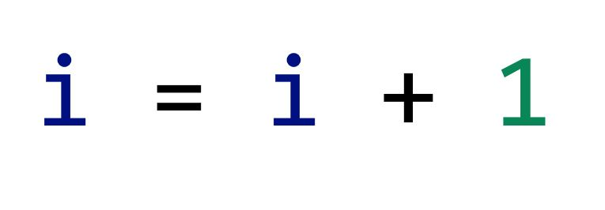
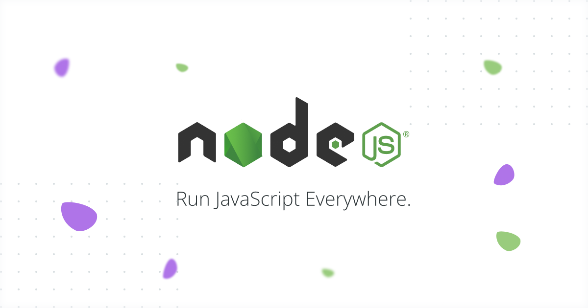

ע
ולם הפיתוח עובר בשנים האחרונות שינויים רדיקליים, ומפתחים מכל הצבעים והמינים מחפשים את דרכם לטכנולוגיות
האינטרנט המודרניות. צד הלקוח (Frontend) חוזר להיות Rich Client עם הרבה לוגיקה וניהול State. שינויים
קורים מהר בתקופתנו, וכשטכנולוגיות חדשות הופכות לחלק מהמיינסטרים של עולם הפיתוח אנחנו מקבלים תחושה שהן
תמיד היו כאן. אם נעשה זום אאוט לרגע ונחזור אחורה, נוכל להצביע על שובו של הלקוח העשיר, ה Rich Client.
תקציר הפרקים הקודמים
חוויתי כבר מהפך טכנולוגי בסדר גודל הזה, זה היה כשהפסקתי לעבוד על מחשבי MainFrame שתפסו שטח של מכולה
בינונית ועברתי לעבוד על מחשבי PC - הייתי עדיין בצבא, וזה קרה קצת לפני כוננות הלילה הבלתי נשכחת של באג
2000 ושינה בשק"ש ליד שני שרתים מהבהבים ומרימי גבה.

אחר כך הגיעה תקופה רוויית הורמונים, אמביציה, אובג'קט אוריאנטד ו-C++, זה היה כשמפתחי C התחילו פתאום
להרגיש לא בנוח שהם עדיין לא למדו לחשוב בצורה מונחית עצמים ולא מבינים את הבדיחות על אובייקטים וירושה וגם
למה פתאום מכנים אותם מאחרי הגב מפתחים פרוצדו-ר-ליים.
ואז הגיעה Java
כשהגיעה ג'אוה עם הלהיט Write Once Run Anywhere היא לעגה לאחותה הזקנה וקנטרה אותה בשם: C with Classes.
היא אהבה להתהדר בעובדה שהיא Pure Object Oriented וככזאת כל דבר אצלה יהיה (פירסט) Class.
עיניים נוצצות
אעיד על עצמי שהעיניים נצצו בהתרגשות והתחושה היתה שאם רק נייטיב לתאר את העולם באמצעות מחלקות וירושות, וכל
אובייקט יכמיס את הState שלו, או-אז יהיה בידינו המפתח לתעלומה הגדולה מכל - איך מפתחים מערכת שקל לתחזק
ושלא נרקבת כל כך מהר.
את התורה הזו למדתי ולימדתי, וליוויתי איתה עשרות צוותי פיתוח במהלך השנים.
אופס, זה צריך לעבוד במקביל
אמרה לי השבוע מישהי - אין דבר מסוכן יותר ממצביא עם מפה ורעיון.
בפועל הסתבר שמערכות שבנויות לגמרי בצורה כזו, לא מתמודדות טוב עם מקביליות ו- Multithreading.
Please be an Atomic Operation

אפשר להגיד שאדון Concurrency קרע מערכות לגזרים, והביא צוותים לברכיים בניסיון לאתר Deadlocks ולסנכרן
קטעים קריטיים תוך המנעות מבעיות ביצועים והרעבה.
Shared mutable state concurrency is too damn hard:
incorrect synchronization, deadlocks, starvation, inconsistent behavior, lost updates or dirty reads,
are all there like accidents waiting to happen.
כיום אנחנו יודעים שלתכנות פונקציונאלי יתרונות רבים ופלטפורמות כמו אנגולר תלויות ומגיעות עם ספריית Rxjs
המוטמעת לתוך הAPIs של הסביבה, זה קריטי כי המקביליות מגיעה לJavascript מעבר לפינה ובכל הכח.
Multi threading is hard for both humans and machines
Old school Rich-Clients
עולם המחשוב התפתח ממכונות מיינפרם שמנמנות שנותנות כוח עיבוד מוגבל למסופונים ירקרקים ללא כוח עיבוד משלהם
והתקדם למחשבים אישיים, עברנו אז לפתח Rich Clients - שם יומרני שהיה מקובל אז לאפליקציות שמנמנות שמתקינים
על מחשב הלקוח.
ניהול הגרסאות של אפליקציות שונות אצל לקוחות שונים היה כאב גדול, מפני שהיה תלוי גם בשיתוף הפעולה של
הלקוחות בעדכוני גרסה מקומיים או דרש עבודת IT מאומצת.
ואז הגיע האינטרנט, ולמרות שהציע ממשק מוגבל מאוד, הפך לאלטרנטיבה פופולרית והעולם זז ל- Thin Clients
מבוססי דפדפן - שפת Javascript הרגישה כמו הילדה הדחויה של השכונה שפתאום משתפים אותה במשחקים פה ושם, אבל
בקטנה.
…and then there was Javascript everywhere
הילדה הזו התבגרה מאז ובשנים האחרונות הפכה לנסיכת השפות, יש שמגדילים לעשות ומכנים אותה שפת האסמבלר של
הדור החדש ואת הדפדפן כ - Virtual Machine החדש.
Javascript משמשת היום לפיתוח אפליקציות אינטרנט מקצה לקצה, כולל צד שרת (Nodejs), אפליקציות מובייל,
אפליקציות דסקטופ ואף רובוטיקה, והיכולת לנייד קוד ומפתחים עם Single Skill Set קוסם לחברות רבות.

The return of the Rich-Client
בצד הלקוח (Frontend) ג'אווסקריפט היא השליטה האולטימטיבית, ושפת היסוד שמתחת לספריות כמו ריאקט,
ולפריימוורקים כמו אנגולר או VUE
התכנות המודרני מביא עימו שילוב של רעיונות טובים מכל הזמנים:
-
מקום (מוגבל) של כבוד לאובג'קט אוריאנטד
Object Oriented Programming
-
מקום (מוגבל) של כבוד ל
Static Typing and compile time errors
-
הזמנה לתכנות פונקציונאלי במקומות המתאימים לכך
-
התייחסות ספציפית למגבלות ויכולות ב-Mobile
-
כלים המאפשרים ניהול State ו- One way data flow
-
יכולת מובנית לבדיקות קוד אוטומטיות (כולל יכולת Dependency Injections)
לסיכום, אני מאמין שאנחנו בתקופה מרתקת מבחינה טכנולוגית, שבה הסטנדרטים המצופים מצוותי פיתוח מקצועיים הם
גבוהים מאיי פעם. תקופה שבה (אולי) הונחו בידינו הכלים לפתח מערכות שיודעות לגדול, הן מבחינת קוד והן מבחינת
צוותי הפיתוח בצורה המאפשרת להן לשרוד את פגעי הזמן והמרחב ולהרקב פחות.
הכותב הוא מייסד ו CTO חברת misterBIT, המתמחה בפיתוח אפליקציות Web מורכבות, והכשרות טכנולוגיות מעמיקות
ועדכניות.
Coding Academy
תודה על הקריאה 🦋
מאמרים נוספים
פרונטאנד - בקאנד ומה שביניהם

בעברי הובלתי את קורס התכנות של ממר"ם מספר שנים והכשרתי מאז אלפי
מתכנתים.
הרבה אנשים שואלים אותי איך כדאי להכנס לעולם הפיתוח וההייטק, ואני עונה שהכי כדאי ללמוד את המקצוע
המבוקש
ביותר בתעשיה כיום - Full Stack Developer...
למאמר המלא
האם תואר במדעי המחשב נדרש כדי להשתלב כמתכנתים בהייטק

בעבר, תואר במדעי המחשב היה תנאי די הכרחי על מנת להשתלב כמתכנת (למעט יוצאי ממר"ם שנחטפו לעבודה כך
או
כך) אך המציאות השתנתה וכיום במיטב החברות, התואר הפך להיות מרכיב זניח ביחס לאלמנטים אחרים כגון...
למאמר המלא
יש ChatGPT - עדיין כדאי ללמוד תכנות ב-2023?

למידת מכונה (Machine Learning - לעיתים מכונה גם למידה חישובית) היא תחום במדעי המחשב העוסק בפיתוח
אלגוריתמים המיועדים לאפשר למחשב ללמוד מתוך דוגמאות, ולבצע משימות חישוביות בהן התכנות הקלאסי אינו
אפשרי...
למאמר המלא
מאמרים נוספים